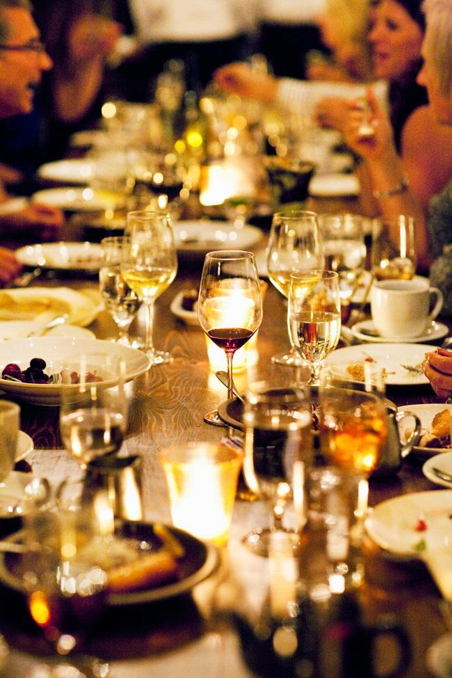

Philoxenia — φιλοξενια
At Kokkari Estiatorio, we are driven by the concept of philoxenia, the art of making a stranger a friend. This philosophy drives our efforts to create a cuisine fit for the gods with the hospitality of a proper Greek home — a restaurant that you would never want to leave.
Named after a small fishing village on the island of Samos in the Aegean Sea, Kokkari is the sister restaurant to acclaimed Evvia Estiatorio in Palo Alto, California.
Legendary Kokkari is the site where Orion, son of the Greek god Poseidon, fell in love with the daughter of the King of Chios. For her love, Orion foraged the island for wild game and seafood to prepare elaborate banquets: Cuisine fit for the gods.
On entering Kokkari, guests experience the old-world charm of a rustic Mediterranean country inn. An inviting fireplace, extensive woodwork, hand-made pottery and freshly picked flowers all reflect the warmth and tradition of ages-old hospitality.
At Kokkari Estiatorio, we are driven by the concept of philoxenia, the art of making a stranger a friend. This philosophy drives our efforts to create a cuisine fit for the gods with the hospitality of a proper Greek home — a restaurant that you would never want to leave.
Named after a small fishing village on the island of Samos in the Aegean Sea, Kokkari is the sister restaurant to acclaimed Evvia Estiatorio in Palo Alto, California.
Legendary Kokkari is the site where Orion, son of the Greek god Poseidon, fell in love with the daughter of the King of Chios. For her love, Orion foraged the island for wild game and seafood to prepare elaborate banquets: Cuisine fit for the gods.
On entering Kokkari, guests experience the old-world charm of a rustic Mediterranean country inn. An inviting fireplace, extensive woodwork, hand-made pottery and freshly picked flowers all reflect the warmth and tradition of ages-old hospitality.

KOKKARI ESTIATORIO
200 Jackson Street (at Front St.)
San Francisco, CA 94111
p: 415.981.0983
| Managing Partner | Paul Kirby |
|---|---|
| Chef/Partner | Erik Cosselmon |
| General Manager | William Boumier |
| Chef de Cuisine | Manuel Vera |
| Office Manager | Molly Barrango |
| Sous Chefs | Brian Beach Miho Reis |
| Pastry | Guillermo Coronado |
| Managers | Bibi Bahador Iain Bates Michele DiRuocco Robin Kirby Valerie Klein |
| Wine Buyer | Lyle Coffield |
| Event Manager | Melissa Lopez |